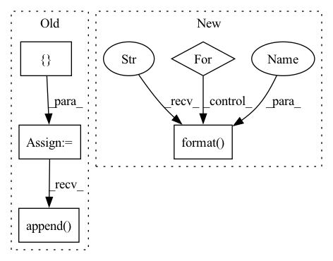

Pattern ID :34589
Before Change
scores = bleu.get_score(generate_corpus)
results = []
avg_results = []
for n_gram in self.n_grams:
score = np.array(scores[str(n_gram)])
results.append(score.mean())
score = np.array(scores[str(n_gram) + "-avg"])
avg_results.append( score.mean())
return results, avg_results
def _calc_metrics_info(self, generate_corpus, reference_corpus):After Change
for n_gram in self.n_grams:
score = np.array(scores["bleu-{}".format(n_gram)])
results["bleu-{}".format(n_gram)] = score.mean()
for n_gram in self.n_grams:
score = np.array(scores["bleu-{}-avg".format(n_gram)])
results["bleu-{}-avg".format(n_gram ) ] = score.mean()
return results
def _calc_metrics_info(self, generate_corpus, reference_corpus):In pattern: SUPERPATTERN
Frequency: 3
Non-data size: 5
Instances Fragment ID: 99422441
Project Name: rucaibox/textbox
Commit Name: e4fe6d053c45d18704007c0ef18c340a2e5e935a
Time: 2021-04-24
Author: 602525931@qq.com
File Name: textbox/evaluator/bleu_evaluator.py
M Class Name: BleuEvaluator
N Class Name: BleuEvaluator
M Method Name: _bleu(3)
N Method Name: _bleu(3)
M Parent Class: AbstractEvaluator
N Parent Class:
M File Name: textbox/evaluator/bleu_evaluator.py
N File Name: textbox/evaluator/bleu_evaluator.py
M Start Line: 67
M End Line: 86
N Start Line: 46
N End Line: 64
Before Change
scores = bleu.get_score()
results = []
avg_results = []
for n_gram in self.n_grams:
score = np.array(scores[str(n_gram)])
results.append(score.mean())
score = np.array(scores[str(n_gram) + "-avg"])
avg_results.append( score.mean())
return results, avg_results
def _calc_metrics_info(self, generate_corpus, reference_corpus=None):
rget metrics resultAfter Change
for n_gram in self.n_grams:
score = np.array(scores["self-bleu-{}".format(n_gram)])
results["self-bleu-{}".format(n_gram)] = score.mean()
for n_gram in self.n_grams:
score = np.array(scores["self-bleu-{}-avg".format(n_gram)])
results["self-bleu-{}-avg".format( n_gram) ] = score.mean()
return results
def _calc_metrics_info(self, generate_corpus, reference_corpus=None): Fragment ID: 99422440
Project Name: rucaibox/textbox
Commit Name: e4fe6d053c45d18704007c0ef18c340a2e5e935a
Time: 2021-04-24
Author: 602525931@qq.com
File Name: textbox/evaluator/selfbleu_evaluator.py
M Class Name: SelfBleuEvaluator
N Class Name: SelfBleuEvaluator
M Method Name: _self_bleu(2)
N Method Name: _self_bleu(2)
M Parent Class: AbstractEvaluator
N Parent Class:
M File Name: textbox/evaluator/selfbleu_evaluator.py
N File Name: textbox/evaluator/selfbleu_evaluator.py
M Start Line: 64
M End Line: 82
N Start Line: 43
N End Line: 61
Before Change
For example, use --haralick switch to compute Haralick features\n""")
sys.exit(1)
features = []
colnames = []
first = True
for fname in args.fnames:
cur = []
im = read_bw(fname, args)
if args.haralick:
har = mh.features.haralick(im, return_mean_ptp=True)
cur.append(har)
if first:
colnames.extend(mh.features.texture.haralick_labels[:-1])
colnames.extend(["ptp:{}".format(ell) for ell in mh.features.texture.haralick_labels[:-1]])
features.append( np.concatenate(cur))
first = False
features = np.array(features)
try:After Change
first = False
for fs in cur:
args.output.write(fname)
for f in fs:
args.output.write("\t")
args.output.write("{:.8}".format( f) )
args.output.write("\n")
if __name__ == "__main__": Fragment ID: 99422442
Project Name: luispedro/mahotas
Commit Name: 64624fb2b46a228fef1141e1ded84e52acccaf6e
Time: 2015-06-09
Author: luis@luispedro.org
File Name: bin/mahotas-features.py
M Class Name: AnonimousClass
N Class Name: AnonimousClass
M Method Name: main(0)
N Method Name: main(0)
M Parent Class:
N Parent Class:
M File Name: bin/mahotas-features.py
N File Name: bin/mahotas-features.py
M Start Line: 78
M End Line: 109
N Start Line: 78
N End Line: 110